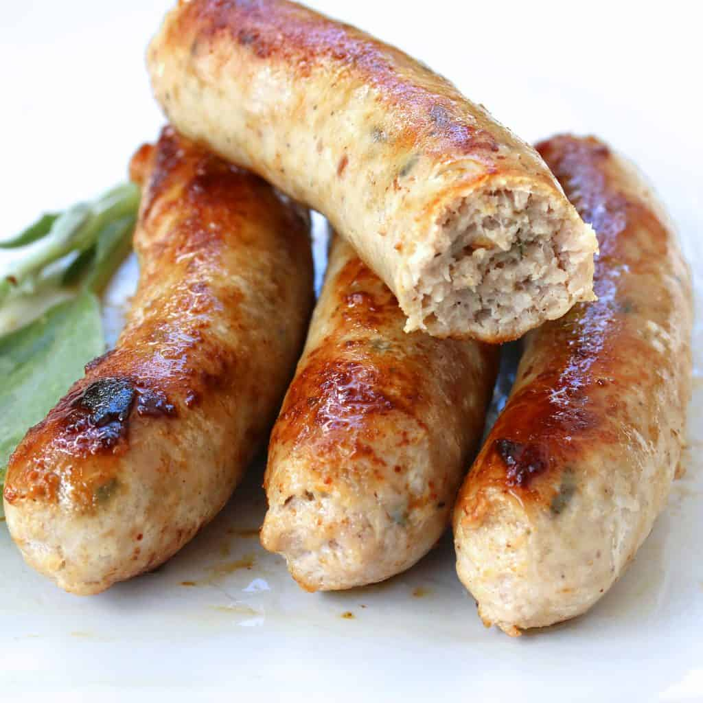
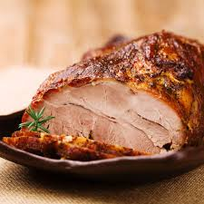
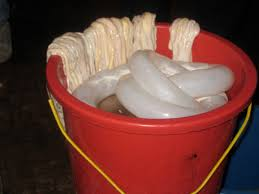
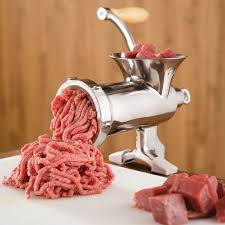
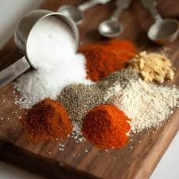
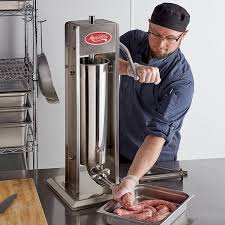
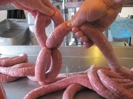
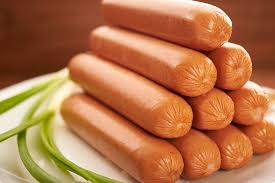

Don't think about sausage too much just enjoy it and don't spend too much time pondering the ethics and methods involved in making it. Sausage goes better on pizza than pepperoni does because it just tastes better and pepperoni always tastes the same whilest sausages can have lots of different flavors without adding chemicals that make it taste like something that's not actually in it. Don't take off all the meat though because even though it might be a bit gross, it does make the pizza a lot more filling and make you buy less pizza. See the in-depth table on the homepage
Making a sausage
...
- Cut meat into chunks
- Freeze until nearly frozen
- Soak natural casings in warm water for 30 minutes, the rinse
- Grind the meat and fat
- Mix with spices and salt until the mixture is "tacky"
- Feed the meat mixture into a sausage stuffer or grinder attachment, filling the casings evenly without creating air pockets
- Twist the stuffed casings into desired lengths, alternating directions for each link to prevent unwinding
- Prick any remaining air bubbles with a pin and rest the sausages in the refrigerator for at least 1-2 hours or overnight to allow the casing to dry and flavors to set






